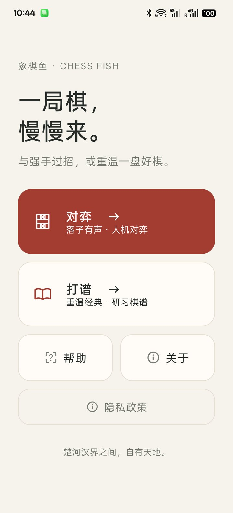
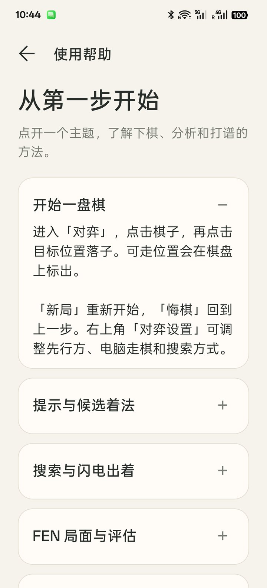

与强手过招
选择执棋模式，回看历史着法。落子轨迹与可移动位置，让棋局更易读。
开源 · 免费 · Android
和皮卡鱼对弈，在经典棋谱中研习。
象棋鱼，让手机成为随身的象棋学习工具。
Android 8.0 及以上 · ARM64 设备

从实战到研习
为什么叫象棋鱼？因为它使用了开源的 Pikafish（皮卡鱼）象棋引擎。
选择执棋模式，回看历史着法。落子轨迹与可移动位置，让棋局更易读。
请求引擎提示，查看候选着法与局势曲线。也可导入 FEN 局面，从任意位置继续对弈。
浏览内置 XQF 棋谱，逐步回放、阅读注释、探索分支，再以当前局面开始对弈。
新版界面
2026 年 10 月 6 日 · Android 真机截图
点击图片可查看完整尺寸。


